01Motivation
Industry adoption so far
- I have been giving talks about LLM-as-a-Verifier across industry.
- Adopters include NVIDIA, Thinking Machines, Databricks, Google, Lambda, Genentech, and Stanford Law School.
- Proposal: build on these adoptions to grow a broader community around verification for agents, and release a position paper to anchor it.

Why now: “Riemann Hypothesis solved by Anthropic?”
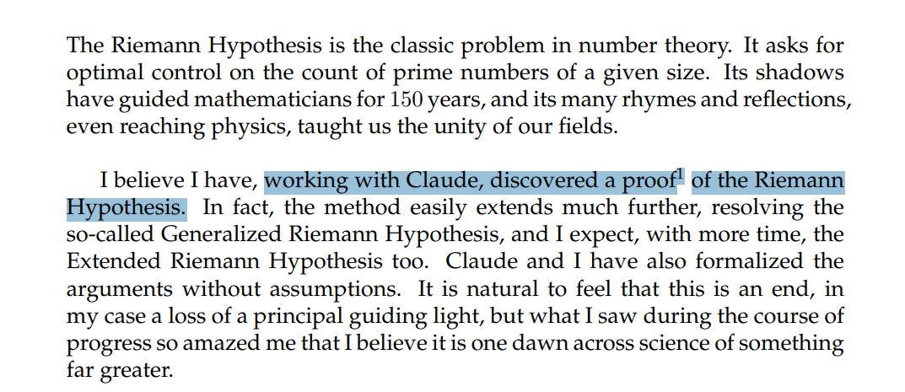
- Breakthroughs like this implicitly “assume the existence of a reliable verifier.”
- The news sparked a broader discussion on X about verifiable vs. non-verifiable tasks and jagged intelligence: LLMs are extremely capable on verifiable tasks such as math and coding, but fail badly in many non-verifiable domains.
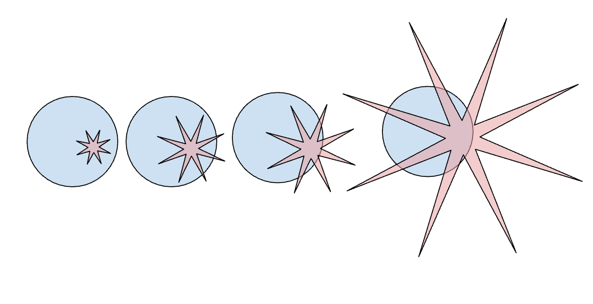
Examples of outputs that are hard to verify:
- A medication order
- A contract
- A lane change by an autonomous car
- A grasp by a robot
02The Position
We plan to write a position paper for OpenVerify, modeled after the Barbarians at the Gate paper.
- Verification, not generation, is now the binding constraint on deploying AI agents.
- Verification is a capability that scales with compute, data, and model capability.
- Verification should be built and measured as a first-class component, separate from the agent.
- Case studies show how verification scaling applies across domains.
03Evidence
Position 1: Verification is the binding constraint
- Today, 74% of production deployments rely on human evaluation (Melissa & Marquita, Measuring Agents in Production, 2025).
- Plan: re-run the survey with Marquita and Melissa, report the updated number, and see whether it has held steady or shrunk.
Position 2: Verification scales along three axes
(a) Compute
In our LLM-as-a-Verifier paper, verification accuracy improves consistently as we scale (1) the granularity of score tokens, (2) the number of repeated evaluations, and (3) the decomposition of evaluation criteria.
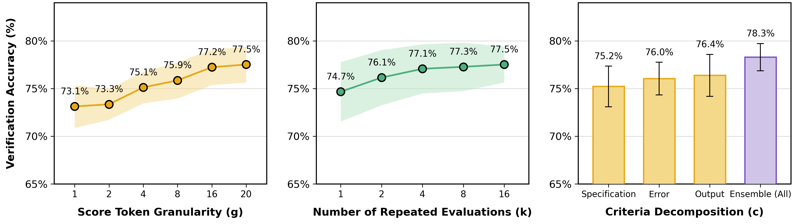
| Cost | Accuracy | Speed |
|---|---|---|
| ↑ Up | ↑ Up | ↓ Down |
(b) Data for training / fine-tuning verifiers
With contrastive language models (CLMs), the test InfoNCE loss (verification loss) L follows a power law in training compute C, dataset size D, and model parameters N.
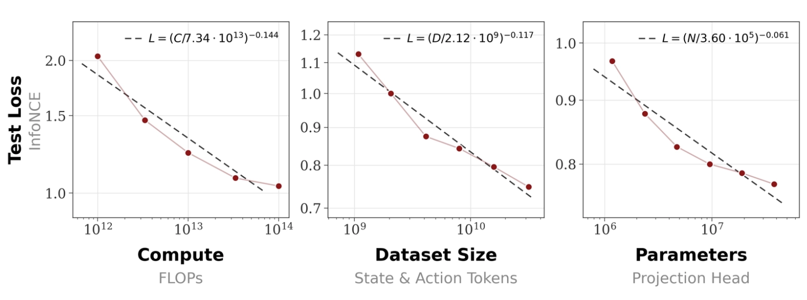
| Cost | Accuracy | Speed |
|---|---|---|
| ↓ Down | ↑ Up on domain-specific data; ↓ Down on generalization | ↑ Up |
(c) Model capability
Newer models are better verifiers out of the box. In twelve months, verification accuracy rose from 69% (Haiku) to 92% (Fable 5.2).

| Cost | Accuracy | Speed |
|---|---|---|
| ↑ Up | ↑ Up | ↓ Down |
04Industry Adoptions & Case Studies
NVIDIA — Nemotron 3.5 model release
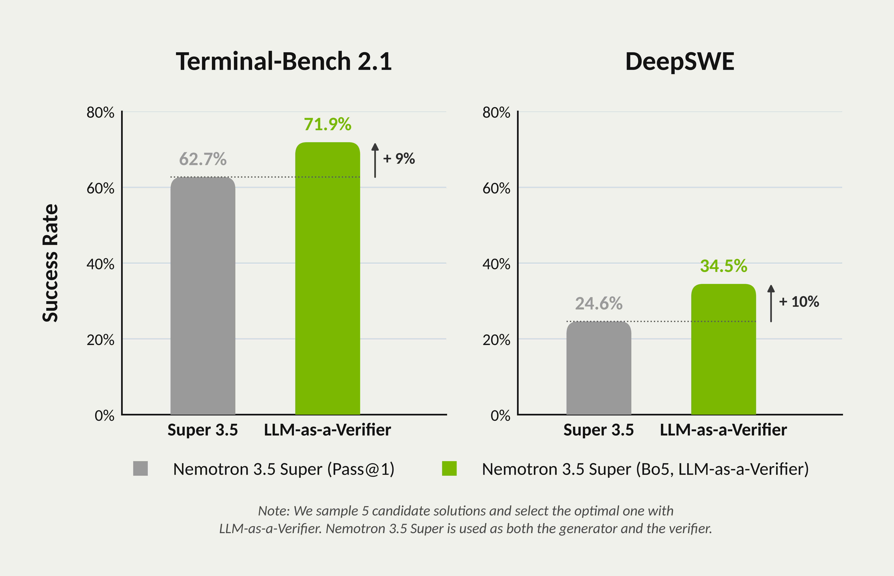
Scaling self-verification with Nemotron 3.5 Super improves accuracy across agentic benchmarks:
| Benchmark | Before | After | Gain |
|---|---|---|---|
| Terminal-Bench 2.1 | 63% | 72% | +9 |
| DeepSWE | 25% | 35% | +10 |
| BrowseComp | 71.5% | 79.8% | +8.3 |
Thinking Machines — 3D modeling
- Blog post
- Standard LLM judges tend to assign identical scores on aesthetic quality, so they provide little signal.
- LLM-as-a-Verifier improves the quality of 3D modeling by 32%.
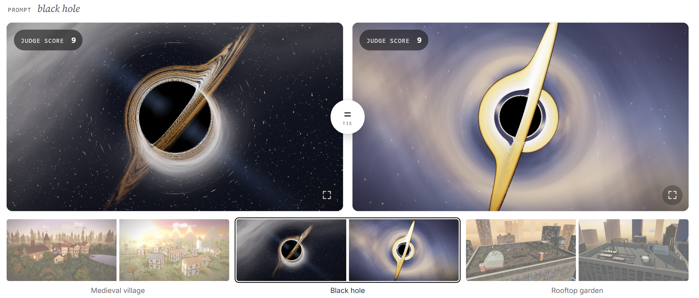
Tie rate grows during RL training: as the model produces increasingly competitive outputs, they become harder to distinguish with discrete scores.

Using LLM-as-a-Verifier as the RL reward signal (instead of standard judges) yields an 8% higher held-out score.
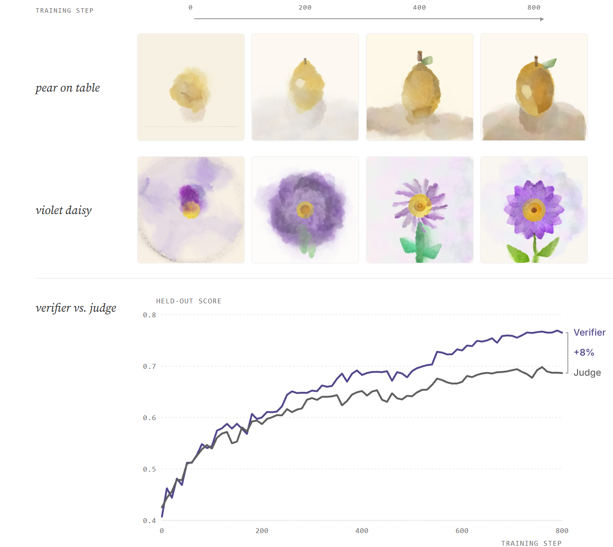
Databricks — OfficeQA V2
LLM-as-a-Verifier improves pass@1 from 36% → 49%, recovering 70% of the oracle headroom.
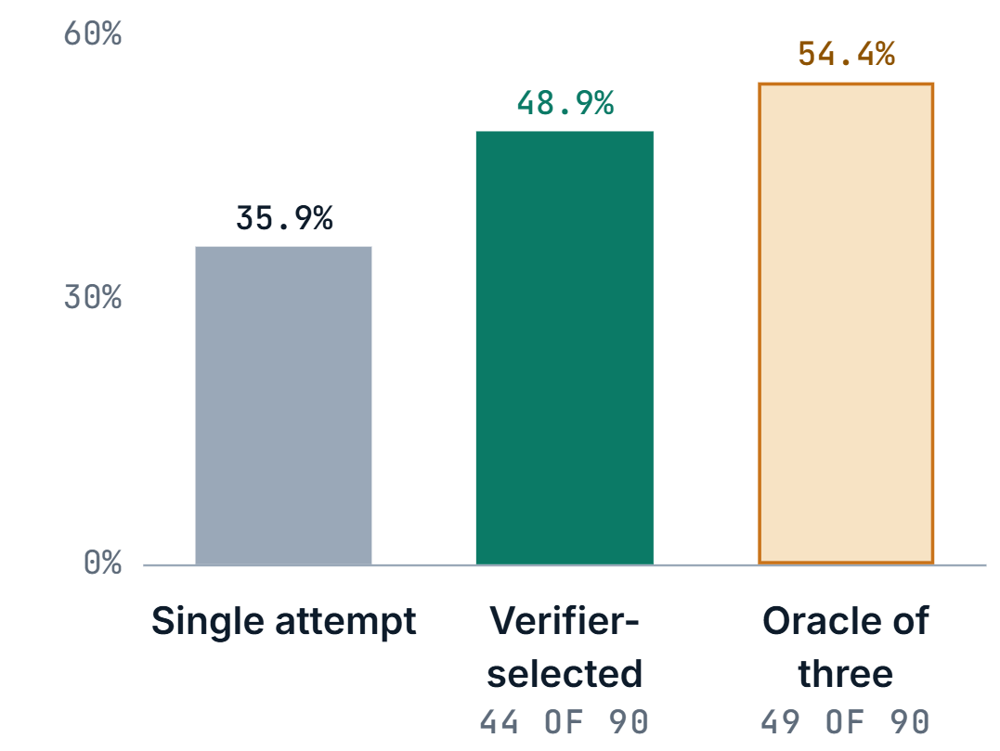
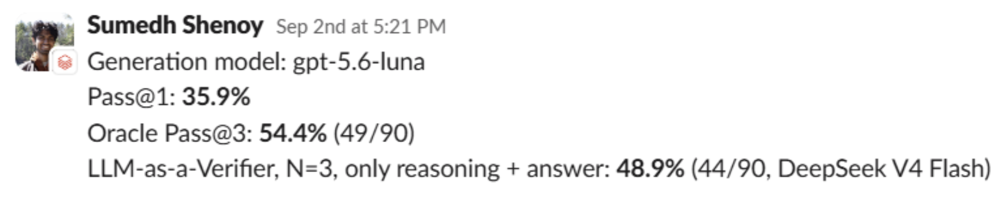
Stanford Law School — Verifier-native legal harness
- Built a verifier-native harness with the Regulation, Evaluation, and Governance Lab (RegLab) at Stanford Law School.
- On the Harvey Lab legal benchmark: +15% pass rate over the Artificial Analysis harness, across models.

Lambda & NVIDIA — Alpamayo
- With scaled self-verification, NVIDIA’s Alpamayo Edge (2B) outperforms the Alpamayo Super (34B) AV model.
- Closed-loop simulation on a Mercedes-Benz: success rate 64.3% → 81.3%; collision rate 11% → 4.5%.


Google Research — GeoExpertQueries
Task: answer questions grounded in Google Maps, spatial, and geographic data.

On GeoExpertQueries (built on Google Maps), LLM-as-a-Verifier raises the success rate of Gemini 3.8 Flash from 63% → 76% (+13).
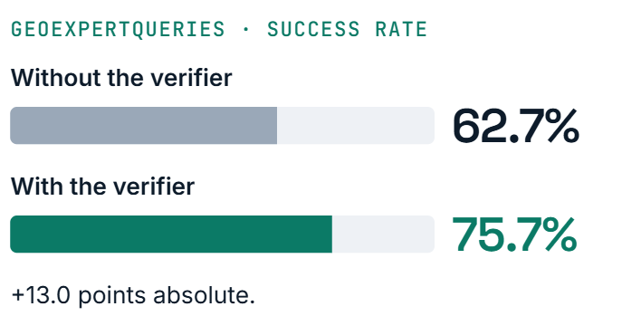
RoboVerify — New paper with Azalia, Marco & Yejin
- Similar in spirit to our earlier RoboMonkey work, but now verifying action proposals from LLMs directly.
- Scaling self-verification with DeepSeek-V4.1-Flash improves success from 25.0% → 50.5%, close to GPT-6 Astra (55.3%) at 10.3× lower cost.
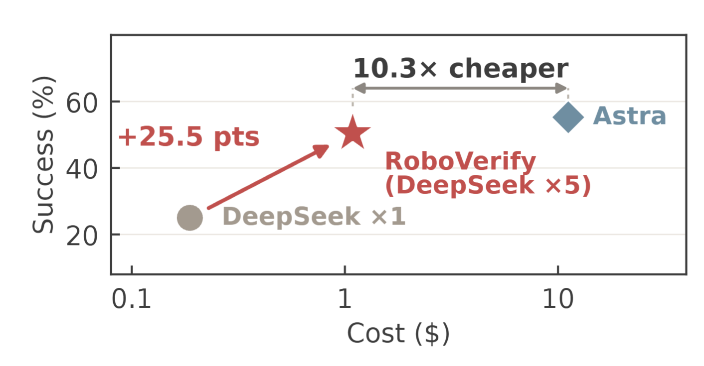
Genentech — Agentic drug discovery
- Genentech’s agentic drug discovery AI team reached out to us.
- Validation in this domain is very expensive: animal studies, human experiments, and the FDA process.
- They already use verifier-style rubrics in many of their AI-for-science projects.
- They are willing to share internal data so we can validate LLM-as-a-Verifier later.
- They are also interested in how robotics + verification could accelerate wet-lab experiments.

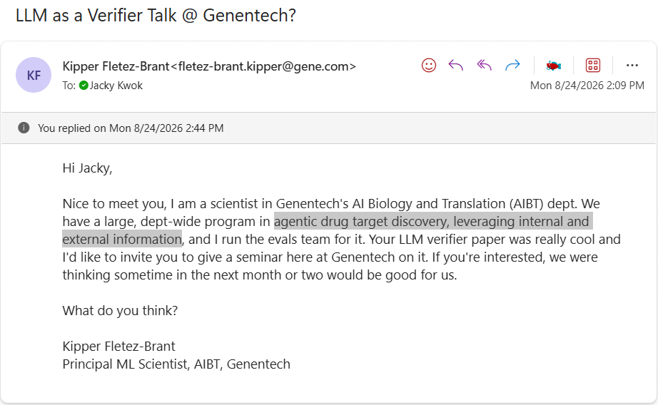
05Collaborator Interviews
One structured interview per collaborator.
Part A — Adoption experience
- What did you use to check agent outputs before?
- What changed after adopting the verifier, and how do you know?
- What broke?
- What would make you stop using it?
- What did it cost to set up?
Part B — Cost / accuracy / latency trade-offs

| Dimension | Question |
|---|---|
| Cost | What do you spend on verification per task today, and what is the most you would pay? |
| Accuracy | What error rate can this workflow tolerate, and what does one wrongly accepted output cost? |
| Accuracy | Which is worse for you: a false accept or a false reject? |
| Latency | How long can the verifier take: milliseconds, seconds, minutes, or overnight? |
| Trade-off | If one had to give, which goes first: cost, accuracy, or latency? |
| Trade-off | What extra cost or delay would you accept to halve false accepts? |
06What Ships with OpenVerify
07Verification Compute & Chip Design

- Open question: Is inference compute shifting toward prefill as verifiers multiply the number of reads?
- SemiAnalysis has reached out and is interested in writing a blog post on verifier compute.
08Next Steps (This Month)
- Settle the thesis and the reporting standard
- Send the schema to partner companies
- Draft the survey